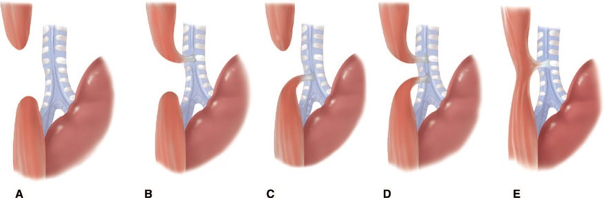
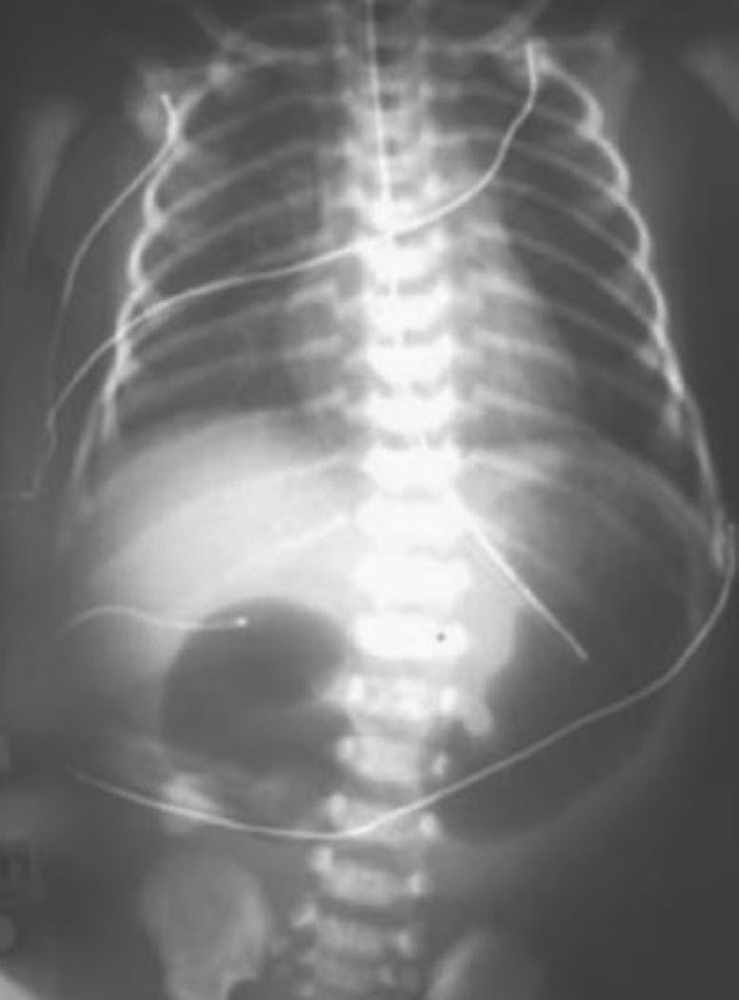
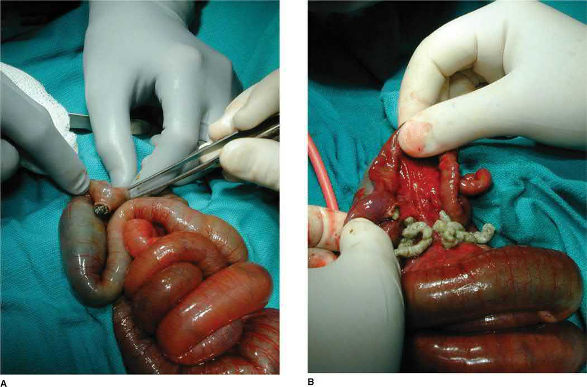
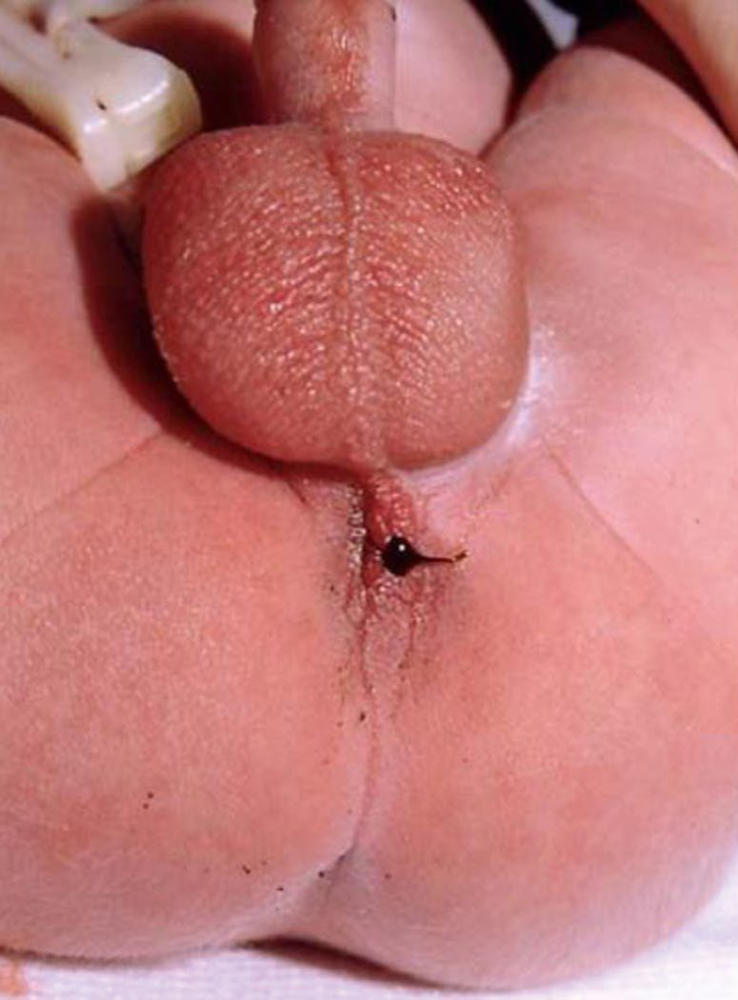

Neonatal Intestinal Obstruction
Summary
- Obstruction in the newborn is a small set of conditions distinguished by the level of the blockage and the timing of the first symptom.
- The single rule that matters most is that any child with bilious vomiting needs an emergent upper gastrointestinal contrast study to rule out malrotation [1], because malrotation can proceed to midgut volvulus and infarction of the entire small bowel.
- This page covers oesophageal atresia and tracheo-oesophageal fistula, duodenal and other intestinal atresias, malrotation and volvulus, meconium ileus, necrotising enterocolitis, and imperforate anus.
- Gastroschisis and omphalocele are covered on the Abdominal Wall Defects page, and Hirschsprung's disease and pyloric stenosis have their own.
Definition
VACTERL denotes vertebral, anorectal (imperforate anus), cardiac, tracheo-oesophageal fistula, radius and renal, and limb anomalies [1].
Imperforate anus is classified by its relation to the levators: high lesions lie above them, low lesions below [1].
Pathophysiology
Duodenal atresia is caused by failure of duodenal recanalisation, whereas the other intestinal atresias develop as a result of intrauterine vascular accidents [1], two different mechanisms producing superficially similar pictures.
Malrotation is failure of normal counterclockwise rotation through 270 degrees [1]. Two things then go wrong: Ladd's bands, coming out from the right retroperitoneum, cause duodenal obstruction, and the narrow mesenteric base allows midgut volvulus, in which the bowel twists around the base of the mesentery, compromising the superior mesenteric artery and leading to intestinal infarction [1].
In meconium ileus the meconium is too thick to separate from the bowel wall, which is why the plain film shows dilated small bowel loops without air-fluid levels [1].
Embryology of rotation and atresia
- In the sixth week the midgut outgrows the abdomen and herniates into the cord, returning between the 10th and 12th weeks with a 270° anticlockwise rotation around the superior mesenteric artery so that the duodenum acquires its C-loop below the artery and the caecum passes above it; the third part of the duodenum and ligament of Treitz fix retroperitoneally and the caecum to the lateral wall, and the mesenteric root lengthens from aorta to right lower quadrant [2].
- Incomplete rotation leaves the caecum in the epigastrium with Ladd's bands running from caecum to lateral wall across the duodenum and a narrow pedicle carrying every superior mesenteric branch, around which the midgut can twist; BCL6 mutations abolishing left-sided expression cause reversed cardiac orientation, ocular defects and malrotation, and FOXF1, essential for the dorsal mesentery, links malrotation with alveolar capillary dysplasia [2].
- Atresias, once ascribed to in-utero mesenteric vascular accidents, more likely reflect disrupted fibroblast growth factor, bone morphogenetic protein and β-catenin signalling in organogenesis, at 1 in 2000 to 1 in 5000 births with equal sex ratio [2].
- Meconium ileus arises when CFTR mutations (and newly identified apical membrane protein genes) produce pancreatic enzyme deficiency and abnormal chloride secretion, yielding viscous water-poor meconium that impacts the ileum [2].
- Necrotising enterocolitis requires activation of Toll-like receptor 4 in the epithelium: TLR4 expression is high in the premature intestine because of its developmental role, colonising bacteria then trigger an exaggerated proinflammatory response and barrier failure, breast milk suppresses TLR4 signalling, synthetic TLR4 antagonists prevent NEC preclinically, disease occurs in episodic waves abrogated by infection control and rarely before 10 days when coliforms colonise, outbreaks have followed formula contaminated with Enterobacter sakazakii, isolates are E. coli, Enterobacter, Klebsiella and occasionally coagulase-negative staphylococci, the terminal ileum then colon are most affected, and histology shows a bland full-thickness infarct [2].
Clinical features
Oesophageal atresia and tracheo-oesophageal fistula
Type C is the most common, at 85%, proximal oesophageal atresia forming a blind pouch with a distal tracheo-oesophageal fistula [1]. The newborn spits up feeds, drools excessively and has respiratory symptoms with feeding, and a nasogastric tube cannot be passed into the stomach; the abdominal radiograph shows a distended, gas-filled stomach [1].
Type A is second, at 5%, oesophageal atresia with no fistula, with similar symptoms but a gasless abdomen on the radiograph [1]. The presence or absence of gas below the diaphragm is what separates the two.

Duodenal and other atresias
- Duodenal atresia is the commonest cause of duodenal obstruction in newborns under a week old [1].
- It is usually distal to the ampulla of Vater, so it causes bilious vomiting and feeding intolerance immediately after birth, and the abdominal radiograph shows the double-bubble sign [1].
- It is associated with maternal polyhydramnios, from the fetus not swallowing amniotic fluid [1].
Other intestinal atresias present with bilious emesis and distension, and most affected infants do not pass meconium; they are more common in the jejunum and can be multiple [1].

Malrotation
Sudden onset of bilious vomiting is the presentation [1]. Seventy-five per cent present in the first month after birth and 90% by the age of one year [1].
Meconium ileus
No meconium is passed in the first 24 hours [1]. It causes distal ileal obstruction with abdominal distension, bilious vomiting and distended bowel loops, and occurs in 10% of children with cystic fibrosis [1].

Necrotising enterocolitis
NEC classically presents with bloody stools after the first feed in a premature neonate [1]. The features are lethargy, respiratory decompensation, abdominal distension, vomiting, blood per rectum, and thrombocytopenia, which is a sign of sepsis in infants [1]. Risk factors are prematurity, hypoxia and sepsis [1].
Imperforate anus
It is more common in males [1]. A high lesion produces meconium in the urine or vagina, from a fistula to bladder, vagina or prostatic urethra; a low lesion carries meconium by fistula to the perineal skin [1].

Proximal versus distal obstruction and Bell staging
- Neonatal obstruction occurs in 1 in 2000 births and bilious vomiting is its cardinal sign, most such newborns having a surgical cause; proximal obstruction gives bilious emesis with a flat or scaphoid rather than rounded abdomen and a paucity of gas (gas should traverse the tract within 24 hours), distal obstruction gives distension and failure to pass black-green meconium within 24–38 hours, neonatal bowel lacks haustra and plicae so small and large bowel cannot be told apart on plain film, and the examiner checks tenderness, discoloration, visible loops, a mass and a patent, correctly sited anus [2].
- In 85% of duodenal obstructions the bile duct enters proximal to the block so vomiting is bilious, distension is absent, polyhydramnios appears in the third trimester, about a third have Down syndrome and need cardiac evaluation; malrotation with volvulus presents most often in the first weeks with irritability and bilious vomiting, minimal early abdominal signs, then bloody stools, wall erythema and oedema and collapse, while a subset present chronically with intermittent pain, occasionally bilious vomiting, failure to thrive and a mistaken diagnosis of reflux [2].
- Meconium ileus shows antenatal intra-abdominal or scrotal calcification and distended loops, then distension, failure to pass meconium and intermittent bilious emesis [2].
- NEC, the most frequent and lethal GI disorder of the stressed preterm neonate with 10–50% mortality and rising incidence as surfactant and ventilation save more low-birth-weight infants, has prematurity and enteral feeding as its only consistent precursors (an aggressive feeding strategy did not raise incidence in a randomised study) with birth asphyxia, umbilical artery cannulation, patent ductus, cyanotic heart disease and maternal cocaine as associations; Bell stage I is feeding intolerance with vomiting or large residuals (an "NEC scare" that often settles with bowel rest and antibiotics), stage II established disease with distension, tenderness, bilious aspirate, bloody stools, a palpable inflamed loop, wall cellulitis and oedema, oliguria, hypotension, tachycardia, non-cardiac pulmonary oedema, leukocytosis or leukopenia with bandaemia, thrombocytopenia and rising urea and creatinine, and stage III perforation with peritonitis, acidosis, sepsis, DIC and death [2].
- Term and near-term NEC localises to the terminal ileum and proximal colon, suggesting ischaemia, associates with congenital heart disease, growth restriction, polycythaemia and perinatal hypoxia, is rare in exclusively breastfed infants and presents with bloody stools and a rapid fulminant course [2].
Aetiology
Duodenal atresia keeps company with other anomalies: cardiac, renal and other gastrointestinal anomalies, and 20% of these patients have Down syndrome, so chromosomal studies should be checked [1].
Tracheo-oesophageal fistula sits inside the VACTERL association, which is why the preoperative workup looks beyond the oesophagus [1].
Imperforate anus likewise requires a search for associated renal, cardiac and vertebral anomalies [1].
Diagnosis
Before surgery for a tracheo-oesophageal fistula, four things are checked: the anus, for imperforation; radiographs and sacral ultrasound, for vertebral and limb anomalies; echocardiography, for congenital heart disease; and renal ultrasound [1].
Malrotation is diagnosed on upper gastrointestinal contrast study: the duodenum does not cross the midline, and the duodenojejunal junction is displaced rightward [1].
Meconium ileus needs a sweat chloride test or PCR for the chloride channel defect, and its radiograph shows dilated small bowel loops without air-fluid levels, sometimes with a ground-glass or soapsuds appearance [1].
Rectal biopsy should be taken to exclude Hirschsprung's disease before surgery for an intestinal atresia [1].
In NEC the radiograph may show pneumatosis intestinalis, free air or portal vein gas, and pneumatosis alone is not an indication for surgery; serial lateral decubitus films are needed to look for perforation [1].
Radiological signs
- Supine and upright or decubitus films assess air-fluid levels, free air and how far gas has travelled; the "double bubble" of dilated stomach and duodenum confirms duodenal obstruction with the right clinical picture, an upper GI series resolving doubt or partial obstruction; volvulus shows a paucity of gas with a few scattered air-fluid levels, malrotation without volvulus an upper GI series with the duodenojejunal junction displaced right, a corkscrew duodenum or complete obstruction with all small bowel on the right, and a displaced caecum on enema is unreliable because the infant caecum sits high normally [2].
- Jejunoileal atresia produces staggered air-fluid levels increasing with distal level, and when complete obstruction is clear a barium enema adds little, though it is useful for distal obstruction or uncertainty to show a microcolon (atresia or meconium ileus) or, if absent, Hirschsprung's disease, small left colon syndrome or meconium plug; meconium ileus forms no air-fluid levels because the contents are viscous, traps gas bubbles in the distal ileum for a "ground glass" appearance, shows an eggshell pattern of calcification when complicated by prenatal perforation, and a contrast enema demonstrates a microcolon with pellets of meconium in the terminal ileum [2].
- Pneumatosis intestinalis (gas-forming microbes invading ischaemic mucosa) is pathognomonic of NEC, portal venous gas is a transient marker of severe necrosis, a fixed loop on serial films suggests a diseased segment with possible localised perforation, and pneumoperitoneum marks stage III; paracentesis showing multiple organisms and leukocytes on Gram stain indicates perforation [2].
- Spontaneous intestinal perforation is a distinct entity, an isolated terminal ileal perforation with intact non-necrotic mucosa, no ischaemia and a thinned submucosa, in slightly smaller, more premature infants often on inotropes, occurring within days of birth or about 10 days later, always with free air and never pneumatosis, and carrying a better prognosis and better response to drainage [2].
Thresholds and severity
Infants who are premature, under 2,500 g, or sick are not repaired immediately. They are managed with a Replogle tube, which suctions saliva from the oesophagus and prevents aspiration, with treatment of respiratory symptoms and a gastrostomy tube for type C to drain the stomach and prevent reflux into the lungs; repair is delayed [1].
The indications for operation in NEC are free air, peritonitis, clinical deterioration and abdominal wall erythema [1].
Meconium ileus complicated by perforation (producing a meconium pseudocyst or free perforation) requires laparotomy [1].
The UK phrasing of the malrotation rule is categorical: bilious vomiting should be assumed to be malrotation volvulus until proven otherwise [6]. If in doubt, operate, the viability of twisted bowel is very time-dependent, and delays in diagnosis can be very serious [6].
Volvulus is defined by direction and degree: twisting, clockwise, of the non-fixed midgut loop on its narrow-based mesentery through 360° or more, obstructing both bowel and superior mesenteric vessels [6]. Signs are sudden abdominal pain, bilious vomiting, progression to shock and passage of blood per rectum, though it may be less dramatic; older children may present insidiously or with rapid-onset shock [6].
Barium meal is the gold standard, and the Oxford Handbook gives the landmark precisely: the duodenojejunal flexure should sit to the left of the left pedicles of the lumbar spine at the level of the pylorus, and an abnormal position implies malrotation; duodenal obstruction with a corkscrew appearance of proximal small bowel suggests volvulus [6]. A plain film may be normal, and a normal ultrasound does not exclude the diagnosis, though ultrasound may show a reversed relation of the superior mesenteric artery and vein [6].
A second-look laparotomy at 24 to 48 hours allows reassessment of questionably viable bowel before resection, since resecting ischaemic gut risks short gut syndrome [6].
- For oesophageal atresia the UK emphasis is on what not to do before the diagnosis is excluded.
- At birth these infants bubble at the mouth and seem to have excessive secretions, and they should not be fed, if fed, cyanosis and aspiration can occur [6]. If atresia is suspected, a large-bore feeding tube should be passed via the mouth to exclude it, because small-calibre tubes can coil [6].
- It may be diagnosed prenatally, the features being maternal polyhydramnios, an absent stomach bubble and associated abnormalities [6].
Medical management before repair is to nurse head-up, keep nil by mouth, place a Replogle oro-oesophageal tube (a sump drain with continuous suction to decompress the blind upper pouch) and consider antibiotics for possible aspiration pneumonia [6]. Isolated tracheo-oesophageal fistula without atresia is unusual and presents later, with recurrent aspiration and chest infections [6].
Treatment and Management
Duodenal atresia is treated by resuscitation followed by duodenoduodenostomy or duodenojejunostomy [1]. Other intestinal atresias are treated by resection [1].
Meconium ileus is treated first without an operation. A Gastrografin enema is effective in 80%, and both diagnoses and potentially treats; an N-acetylcysteine enema can also be used [1]. If surgery is required, the bowel is decompressed manually and an ostomy vent created for antegrade N-acetylcysteine enemas [1].
NEC is initially managed medically with resuscitation, nil by mouth, antibiotics, parenteral nutrition and an orogastric tube; where operation is indicated, dead bowel is resected and stomas brought up [1]. A barium contrast enema is needed before taking down the stomas, to exclude distal obstruction from stenosis [1].
Imperforate anus is treated according to the level. A high lesion needs a colostomy with later anal reconstruction by posterior sagittal anoplasty; a low lesion needs posterior sagittal anoplasty alone, pulling the anus down into the sphincter mechanism, with no colostomy [1]. Postoperative anal dilatation is needed to avoid stricture, and these patients are prone to constipation [1].
Decompression and medical management
- Duodenal obstruction is decompressed by orogastric tube with fluids to maintain urine output, and unless the infant is ill or tender (when volvulus is assumed and surgery not delayed) associated anomalies are sought first; volvulus demands immediate resuscitation and laparotomy (laparoscopy only if stable) [2].
- Uncomplicated meconium ileus is treated non-operatively by fluoroscopic transanal infusion of dilute water-soluble contrast or N-acetylcysteine into the dilated ileum, repeated at 12-hour intervals over several days, with vigorous fluid resuscitation because the agents draw fluid into the lumen; failure to reflux contrast into the dilated ileum signifies atresia or complicated disease and mandates laparotomy [2].
- Suspected NEC is managed by stopping feeds, nasogastric decompression, broad-spectrum parenteral antibiotics, resuscitation, inotropes, ventilation as needed and parenteral nutrition; stage I remains nil by mouth on antibiotics for 7–10 days before refeeding, stage II is watched with serial examination for diffuse peritonitis, fixed mass, progressive cellulitis or sepsis with laparotomy for failure to improve after several days or a positive paracentesis, and stage III (perforation or failed medical therapy) is treated either by laparotomy or by bedside peritoneal drainage under local anaesthesia, which relieves abdominal pressure to allow ventilation, creates a controlled fistula, lets about a third survive without further surgery, and is followed by laparotomy if there is no response in 48–72 hours; a randomised trial found similar outcomes for primary drainage and laparotomy but was criticised for many exclusions and for probably including spontaneous perforations [2].
Procedural interventions
Tracheo-oesophageal fistula repair is by right extrapleural thoracotomy in most cases, with primary repair and placement of a gastrostomy tube; the azygos vein often needs to be divided [1].
Ladd's procedure for malrotation has five components [1]:
1. Resect Ladd's bands. 2. Counterclockwise detorsion, which may require multiple turns. 3. Place the caecum in the left lower quadrant. 4. Place the duodenum in the right upper quadrant, small bowel to the right, large bowel to the left. 5. Appendicectomy, which avoids confounding a future diagnosis.
Operative repair by cause
- Duodenal atresia, stenosis or annular pancreas is treated through a transverse right supraumbilical incision or laparoscopically by diamond-shaped duodenoduodenostomy (proximal transverse to distal longitudinal), tapering an extremely dilated duodenum over a 24 F or larger Foley with a linear stapler, never dividing an annular pancreas for fear of ductal injury, and searching for malrotation, anterior portal vein, a second distal web and biliary atresia; a web is excised through a vertical duodenotomy closed horizontally with the mucosa oversewn, guarding the bile duct that opens near the web (some prefer duodenoduodenostomy at the risk of an expanding blind segment), gastrostomy is not routine, and repair need not await term or 3 kg, infants of 1 kg are repaired safely once pulmonary status allows [2].
- Small-bowel atresia is repaired relatively urgently because of volvulus risk: type 1 is a mucosal atresia with intact muscularis, type 2 ends joined by a fibrous band, type 3A a V-shaped mesenteric gap, type 3B the "apple-peel" or "Christmas tree" deformity with retrograde supply from the ileocolic or right colic artery, and type 4 multiple atresias in a "string of sausages"; the extremely dilated proximal bowel, which rarely regains motility, is resected or tapered and an end-to-back anastomosis made by fish-mouthing the collapsed distal loop along its antimesenteric border, with end ileostomy and mucous fistula if the proximal segment has necrosed from volvulus [2].
- Volvulus is clockwise and untwisted anticlockwise ("turn back the hands of time"); Ladd's procedure divides the bands between caecum and abdominal wall and between duodenum and terminal ileum to splay the superior mesenteric artery, bringing the straightened duodenum to the right lower quadrant and caecum to the left, removes the appendix to prevent later diagnostic error and fixes nothing with sutures; with advanced ischaemia the bowel is merely untwisted and re-examined at a second look 24–36 hours later, a transparent silo allowing continuous inspection, and only clearly necrotic bowel is then resected conservatively [2].
- Operative meconium ileus is treated by irrigation with dilute contrast, N-acetylcysteine or saline through a purse-string, or by resection of the distended terminal ileum with flushing of pellets and an end ileostomy, the distal bowel brought out as a mucous fistula or sewn to the side of the ileum as a Bishop–Koop anastomosis, or an end-to-end anastomosis; a Mikulicz double-barrelled enterostomy sutures the limbs together, exteriorises them and crushes the common wall for extraperitoneal closure [2].
- At laparotomy for NEC gangrenous or perforated bowel is resected and the ends brought out; with massive involvement marginal bowel is retained for a second look at 24–48 hours, extensive necrosis then managed by proximal diversion with resection of definitely dead bowel and retention of questionable bowel distally, a localised perforation without peritonitis may be anastomosed, and an unresectable diseased segment may be drained; spontaneous perforation is treated by resection and stoma, and stomas in both are now closed at about 38–40 weeks corrected gestation (roughly 6 weeks after surgery, when proinflammatory gene expression has normalised) rather than waiting for 5 kg, after a mandatory contrast enema for the strictures that develop in 20%, with the whole intestine inspected at closure [2].
Anorectal malformations: Peña's classification and PSARP
- Anorectal malformations (1 in 5000, sexes nearly equal) arise from failure of urorectal septum descent; the traditional high/low division by the levator is arbitrary, so Peña classifies by fistula site, in males cutaneous perineal, rectourethral bulbar, rectourethral prostatic or rectovesical (bladder neck), rectourethral being commonest then perineal then bladder neck; in females cutaneous perineal or vestibular (commonest), with persistent cloaca third, a single perineal orifice at the urethral site where rectum, vagina and urethra fuse into a common channel with hypoplastic genitalia; imperforate anus without fistula and rectal atresia with a normal canal are rare [2].
- About 60% have associated malformations, urinary in about 50%, sacral, tethered cord especially with high lesions, oesophageal atresia, cardiac defects and VACTERL, so abdominal and spinal ultrasound, echocardiography and spinal radiographs are obtained; the abdomen is not initially distended, a perineal fistula may take 24 hours to declare itself so the infant is observed with an orogastric tube for meconium on the perineum or in urine, and the inverted lateral film with a perineal marker is imprecise [2].
- Low lesions have a perineal operation without colostomy; high lesions have a newborn colostomy and pull-through at about 2 months, cloaca requiring urinary tract assessment at colostomy and possibly vesicostomy, and doubt favours colostomy over an injudicious perineal operation that could compromise continence [2].
- Peña and DeVries' posterior sagittal anorectoplasty places the child prone jack-knife, divides levator and external sphincter posteriorly in the midline, divides the fistula, brings the rectum down once length allows and reconstructs the muscle around it; in Peña and Hong's review of 1192 patients 75% had voluntary bowel movements and nearly 40% were fully continent, high lesions tending to incontinence and low lesions to constipation; laparoscopic assistance mobilises the rectum to the bladder-neck fistula supine, then a nerve stimulator locates the muscle complex perineally and a Veress needle and dilators guided by the laparoscope create the track for pull-through and anoplasty [2].
Complications
The complications of tracheo-oesophageal fistula repair are gastro-oesophageal reflux, leak, stricture and recurrent fistula [1].
Malrotation's complication is the reason for its urgency: midgut volvulus compromises the superior mesenteric artery and infarcts the intestine [1].
Meconium ileus can perforate, producing a meconium pseudocyst or free perforation [1].
After anoplasty for imperforate anus, stricture and constipation are the recognised sequelae [1].
Outcomes
Survival after tracheo-oesophageal fistula repair is related to birth weight and to the associated anomalies rather than to the oesophageal repair itself [1].
Mortality in necrotising enterocolitis is 10% [1].
The prognosis in malrotation turns entirely on whether volvulus has occurred before the contrast study is done, which is the whole justification for treating bilious vomiting in a child as an emergency [1].
Duodenal atresia repair now exceeds 90% survival with late complications (megaduodenum, motility disorders and reflux) in 12–15%; malrotation corrected early has an excellent prognosis but delay brings death or short-gut syndrome needing transplantation; NEC survival is about 85%, 65% and 35% for Bell stages I, II and III, massive necrosis leaving under 40 cm of viable bowel causes short bowel syndrome with parenteral nutrition cholestasis and fibrosis that may require liver and small-bowel transplantation, and multidisciplinary short-bowel clinics reduce line infections and cholestasis [2].
References
- The ABSITE Review, 2022, Ch. 39 Pediatric Surgery
- Schwartz's Principles of Surgery, 11th ed., Ch. 39, Pediatric Surgery
- Schwartz's Principles of Surgery: ABSITE and Board Review, Ch. 39 Pediatric Surgery
- Sabiston Textbook of Surgery, 22nd ed., Ch. 117 Pediatric Surgery
- Maingot's Abdominal Operations, 13th ed., Ch. 9
- Oxford Handbook of Clinical Surgery, 5th ed., Ch. 13 Paediatric surgery